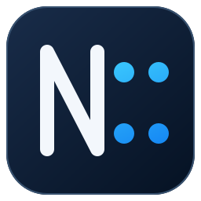

Native and responsive
A focused C++ desktop app built on real Windows controls, with fast startup and a familiar interface.

Notepad::Native Windows text editor
Notepad:: keeps everyday text and code editing responsive, clear, and local—without plugins, accounts, telemetry, or background indexing.
Windows 10+ · x64 · Early preview
Focused by design
A focused C++ desktop app built on real Windows controls, with fast startup and a familiar interface.
Find, replace, regular expressions, match highlighting, and a dedicated results view.
Built-in highlighting for popular formats, plus lightweight symbols and completion without an LSP.
UTF-8, UTF-16, ANSI, line-ending controls, change detection, and atomic saves.
Large-file mode
Notepad:: uses an 8 MiB editable window for very large UTF-8 files. Navigate quickly, inspect content, make targeted edits, and save without turning a text editor into a memory benchmark.
Intentionally absent
Just a dependable place to open a file, understand it, change it, and save it.